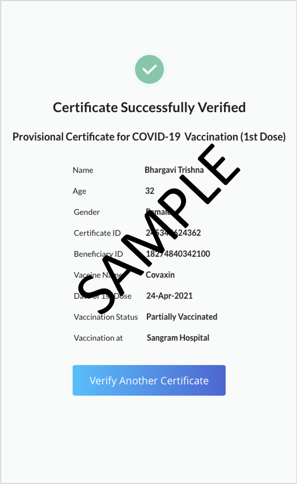
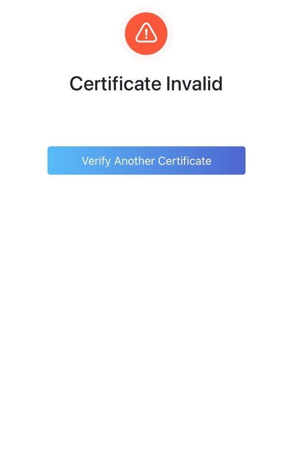

The Co-WIN vaccination certificate has a digitally signed secure QR
code. This can be authenticated online using the verification utility in
this portal or using third party verification app using the services
outlined below.
Option 1- Online Varification
Steps For Online Verification :
- Visit https://verify.gov.in/
- Click on "Scan QR"Code
- A notification will prompt to activate your device’s camera
-
Point the camera to the QR code on the bottom right of the certificate
issued and scan
-
Please keep the following points in mind while scanning the QR code
- QR code should cover at-least 70%-80% of screen
- Complete QR code should be part of camera frame
- QR code should be parallel to the camera
- Camera should be hold steadily for at-least 5 sec
-
If camera is unable to read the QR code within 45 seconds, a message -
“Camera is not able to read the QR code, please try again with
a try again button will be displayed. Verifier will be required to
scan the QR code again following the instructions mentioned in Step 2.
-
On successful verification, following attributes are displayed on the
screen:
- Message “Certificate Successfully Verified”
- Name
- Age
- Gender
- Certificate ID
- Beneficiary ID
- Vaccine Name
- Data of Dose
- Vaccination Status
- vaccination at

-
In case of an unsuccessful verification if the certificate is not
genuine, screen will show the message “Certificate Invalid”

You can view a demo class of 'how to verify'